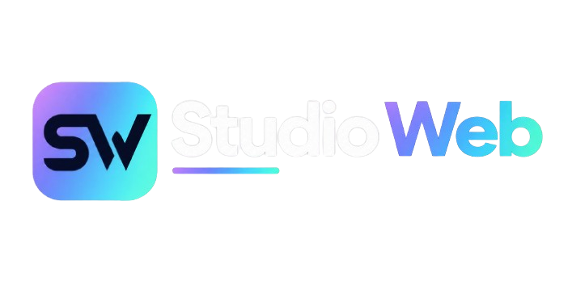
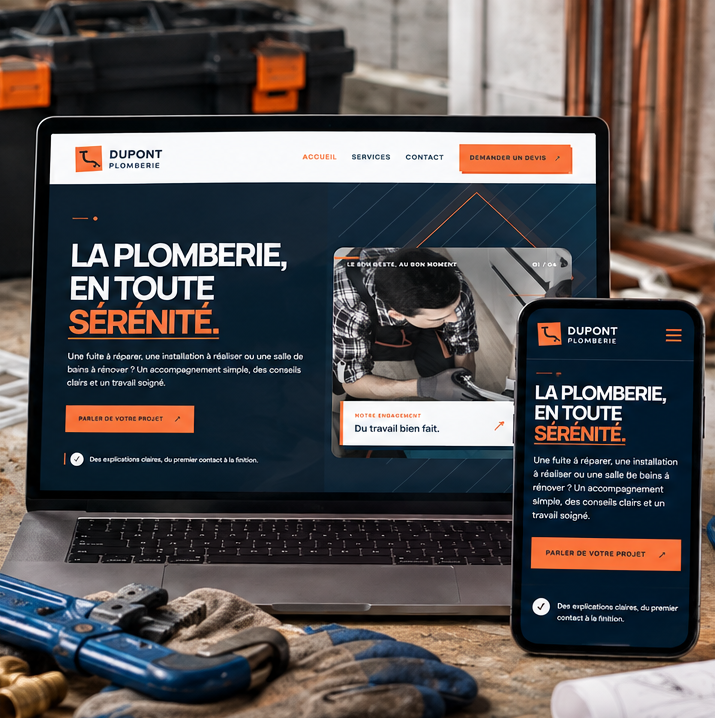
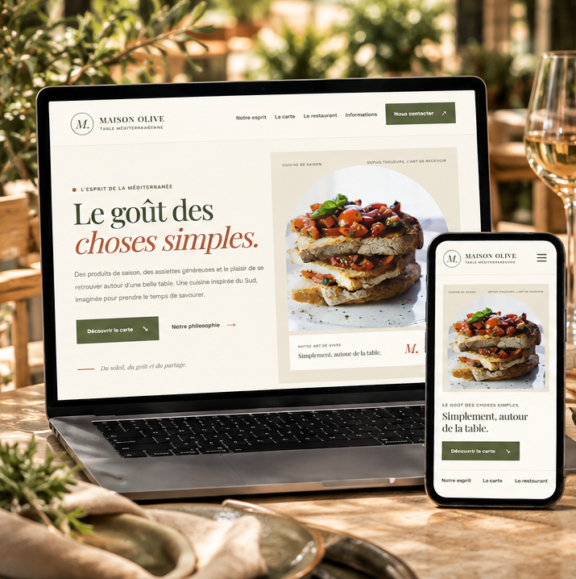

Donner vie à votre site
Je crée une vitrine en ligne à votre image : vos services, votre histoire et vos coordonnées sont présentés clairement pour que vos visiteurs comprennent rapidement ce que vous leur apportez.
Découvrir les formules →
Artisan ou commerçant, votre savoir-faire mérite d’être vu ! Je crée des sites vitrines modernes ou donne un nouvel élan à votre site actuel, pour mettre vos services en valeur, inspirer confiance et aider vos futurs clients à vous contacter.
Un projet pensé avec vous.
Un interlocuteur unique, des explications claires et un devis avant de commencer.
Création de site · Refonte · Mobile · Présence locale
Découvrez ce que nous pouvons faire pour vous et contactez-nous simplement.
MES SERVICES
Vous lancez votre activité ou vous êtes prêt à faire évoluer votre site ? Ensemble, mettons en avant ce qui vous rend unique et donnons à vos clients les bonnes informations pour passer à l’action.
Je crée une vitrine en ligne à votre image : vos services, votre histoire et vos coordonnées sont présentés clairement pour que vos visiteurs comprennent rapidement ce que vous leur apportez.
Découvrir les formules →Votre activité a évolué ? Votre site peut évoluer avec elle. Selon sa structure, je peux moderniser son apparence, clarifier les informations et améliorer le confort de navigation, notamment sur téléphone.
Discuter de votre site →Nous mettons en avant les informations qui comptent pour vos clients : votre zone d’intervention, vos coordonnées et vos services. Selon vos besoins, nous pouvons aussi étudier les pistes pour renforcer votre présence locale.
Découvrir les options →CRÉATION · REFONTE · ACCOMPAGNEMENT
Un premier site, une refonte ou quelques améliorations ciblées : choisissez la formule qui correspond à votre objectif. Les prix sont indicatifs et nous pourrons préciser ensemble votre besoin avant tout démarrage.
Pour présenter votre activité avec une présence en ligne claire et professionnelle.
Une page pour aller à l’essentiel.
600 € prix indicatif
Plusieurs pages pour détailler vos services.
900 € prix indicatif
Un site conçu pour vos clients locaux.
1 150 € prix indicatif
Pour moderniser votre site, améliorer son affichage ou revoir son organisation.
Une apparence plus actuelle, sans tout reconstruire.
350–500 € fourchette indicative
Un site plus agréable à consulter sur téléphone.
450–700 € fourchette indicative
Repenser le site et ses pages.
700–1 200 € fourchette indicative
Moderniser le site et mieux présenter votre activité locale.
950–1 500 € fourchette indicative
Des prestations ponctuelles ou un suivi, selon votre besoin.
Pour de petites modifications après la mise en ligne.
35 € / mois
Rendre un texte existant plus clair et convaincant.
80 € / page
Un texte rédigé à partir de votre activité et de vos objectifs.
120 € / page
Pour présenter votre activité, vos services et vos coordonnées.
300 € les 3 pages
Une demande particulière ou un besoin complémentaire.
Sur devis
Les prix affichés sont indicatifs et ne constituent pas un devis ferme. La rédaction complète des textes, les photos, le logo, le nom de domaine, l’hébergement, les licences, les fonctionnalités particulières et les prestations tierces ne sont inclus que s’ils sont mentionnés dans le devis. Pour une refonte, le prix dépend aussi de la technologie et de l’état du site existant. Aucun travail ne commence sans validation du devis et des modalités convenues. Le devis précisera le montant total ainsi que le traitement de la TVA applicable.
MES PROJETS
Ces projets fictifs donnent un aperçu de deux styles possibles : une présentation claire et rassurante pour un artisan, puis une ambiance chaleureuse pour un restaurant. Ils illustrent ma façon d’adapter le design et les informations à chaque activité.

Voir la démo ↗Une vitrine imaginée pour mettre en avant les prestations, rassurer les visiteurs et rendre le contact facile. Les tons naturels et le vert forêt créent une identité sobre et professionnelle.

Voir la démo ↗Une ambiance méditerranéenne, des couleurs chaleureuses et une présentation pensée pour donner envie de découvrir le lieu. Ce concept montre comment le site peut prolonger l’univers d’un restaurant.
ⓘ Les noms, les entreprises et les activités présentés dans ces démonstrations sont fictifs. Ces projets personnels ne constituent pas des témoignages ou des résultats clients.
Votre activité a son propre caractère. Nous partirons de vos objectifs, de vos clients et de ce qui vous distingue pour imaginer un site à votre image.
Parler de votre activité ↗À PROPOS
Avec Studio Web, j’accompagne les artisans et les commerces locaux qui veulent présenter leur activité avec clarté et personnalité. Création ou refonte, l’idée est de construire une présence en ligne professionnelle, facile à consulter et adaptée à vos clients.
Un bon site met en avant l’essentiel : ce que vous proposez, où vous intervenez, ce qui fait votre différence et comment vous contacter. Vos visiteurs trouvent plus facilement les informations dont ils ont besoin.
Chaque page a un rôle : valoriser vos services, guider vos visiteurs et leur donner envie de vous contacter. Je privilégie un design soigné, une navigation simple et des fonctionnalités réellement utiles à votre activité.
Vous échangez directement avec moi, sans jargon inutile. Nous faisons le point sur vos idées, je vous présente les possibilités et vous recevez un devis clair pour décider sereinement de la suite.
COMMENT TRAVAILLONS-NOUS ?
Vous n’avez pas besoin de maîtriser la technique : je vous guide à chaque étape. Nous définissons ensemble les priorités, le budget et les prochaines étapes avant de commencer.
Vous m’expliquez votre activité, vos clients et si vous souhaitez créer un site ou améliorer un site existant.
Vous recevez le détail des pages, des prestations, du prix, des modalités de paiement et du calendrier estimé.
Je crée les pages prévues ou retravaille celles de votre site existant, puis vous transmets les éléments convenus pour recueillir vos retours.
Après validation et règlement selon le devis, nous préparons la mise en ligne et la remise des accès prévus.
QUESTIONS FRÉQUENTES
Vous avez une question avant de vous lancer ? Retrouvez ici les informations essentielles pour avancer avec une vision claire du projet.
Pour la création d’un site, les tarifs indicatifs commencent à 600 € pour une page. Pour une refonte, les tarifs dépendent de l’état du site existant, de sa technologie et de l’ampleur des changements souhaités. Les fourchettes de prix affichées sur cette page sont indicatives. Le montant exact sera précisé dans le devis avant le début du projet.
Le délai dépend du nombre de pages, des fonctionnalités, de la disponibilité des textes et des photos et, pour une refonte, de l’état du site existant. Le calendrier estimé sera indiqué dans le devis et les conditions de démarrage seront convenues ensemble.
Nous en discutons avant le début du projet. Si vous avez déjà vos contenus, nous pouvons partir de ceux-ci. La rédaction, la recherche d'images ou la création de visuels peuvent être proposées en supplément si elles ne sont pas incluses au devis.
Pas automatiquement. Les frais de domaine, d'hébergement et les éventuels services tiers seront identifiés dans le devis. Il est préférable que le nom de domaine soit enregistré à votre nom ou à celui de votre entreprise.
L'affichage sur mobile fait partie des objectifs de conception. Je vérifie la présentation sur différentes tailles d'écran. Le résultat final dépend également des contenus et des fonctionnalités retenus.
Je peux mettre en place les bases du référencement naturel : structure des pages, titres, descriptions et contenus pertinents. Personne ne peut garantir une position précise sur Google, car le classement dépend de nombreux facteurs et de la concurrence.
Nous pouvons étudier votre présence locale et les besoins autour de votre fiche d'établissement Google. La création, la vérification ou l’optimisation de cette fiche doit être explicitement prévue dans le devis. Les résultats ne peuvent pas être garantis.
Cela dépend de la solution choisie. Avant de commencer, nous préciserons comment le site sera construit, quels accès seront remis et quelles modifications vous pourrez effectuer en autonomie.
Les modalités de livraison, les accès et les droits sur les éléments créés seront définis par écrit. Les conditions applicables, notamment celles qui concernent les outils et les ressources de tiers, seront précisées dans les documents du projet.
Le devis indique le prix et les modalités de règlement. Un acompte peut être demandé au démarrage, puis le solde est réglé selon l’échéancier accepté. Les conditions doivent être validées avant le début du travail.
Un forfait de suivi peut être proposé si votre site en a besoin. Son prix, les tâches incluses, la fréquence des interventions et les limites du service seront précisés dans une proposition distincte.
Les accès et les éléments prévus sont remis selon le devis. Toute période de support, correction ou maintenance après livraison doit être définie par écrit, avec sa durée et son périmètre.
Vous pouvez tout à fait utiliser un outil de création de site. Faire appel à moi peut être utile si vous préférez déléguer la conception et la réalisation, ou si vous souhaitez être accompagné pour organiser les informations de votre activité.
PARLONS DE VOTRE PROJET
Parlez-moi de votre activité et de ce que vous aimeriez améliorer ou créer. Nous regarderons ensemble les possibilités et les prochaines étapes. Le premier échange est sans engagement : c’est simplement l’occasion de faire connaissance.
bcuriecadet@gmail.comUn simple e-mail suffit pour commencer. Même si votre idée n’est pas encore totalement définie, nous pouvons la faire avancer ensemble.